Dezoito capturas do site publicado em eunaoseimecomunicar.vercel.app, tiradas em 12 de novembro de 2026: quatro tamanhos de tela em cada um dos três idiomas, e a caixa da frase em celular e em notebook. O sorteio das opções é o mesmo em todas, então só a tela e a língua mudam. Toque numa captura para abrir em tamanho cheio.
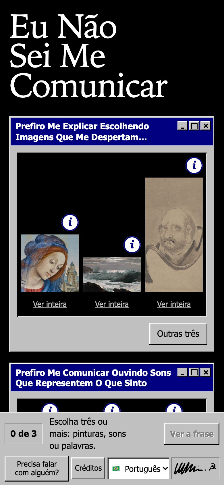
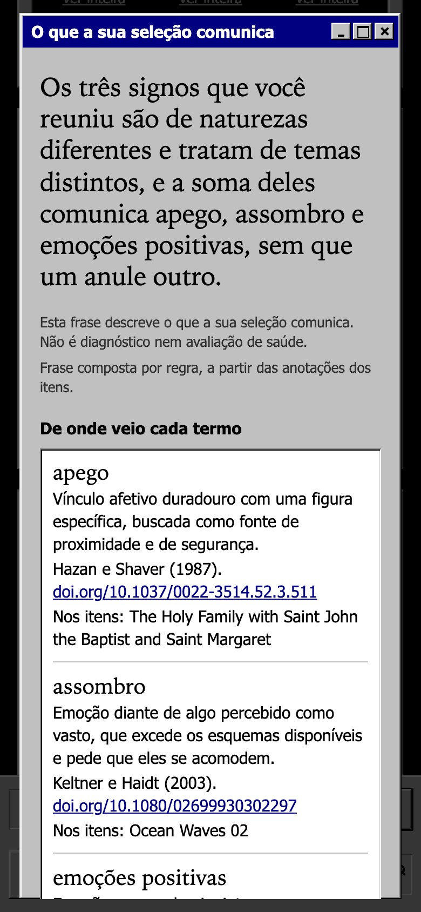
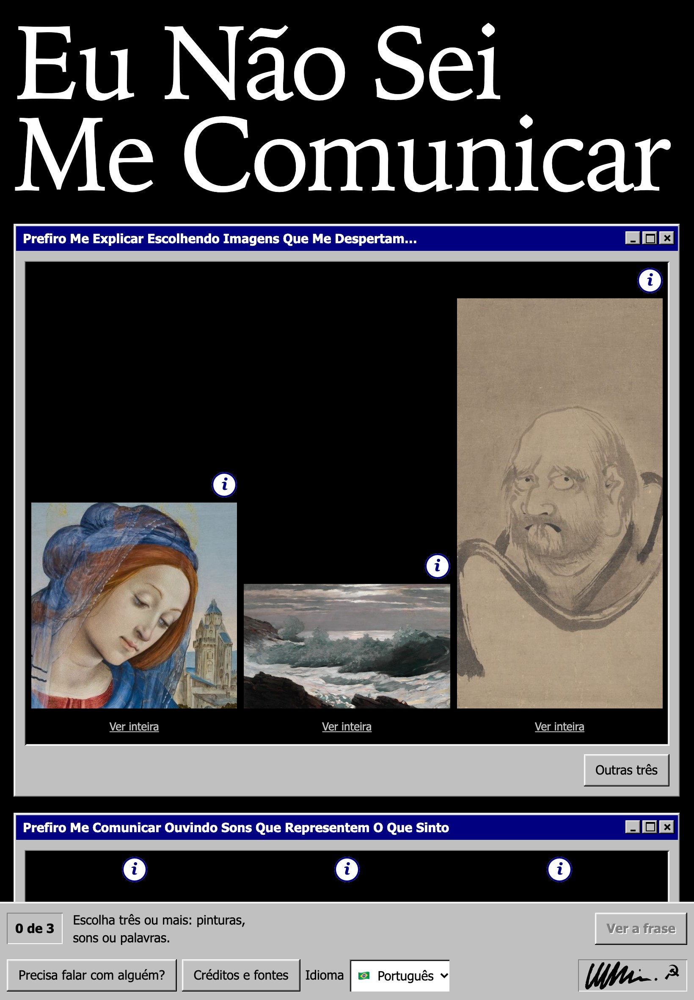
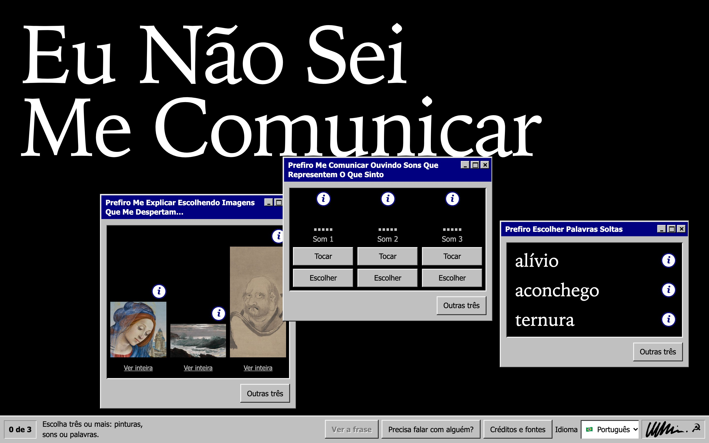
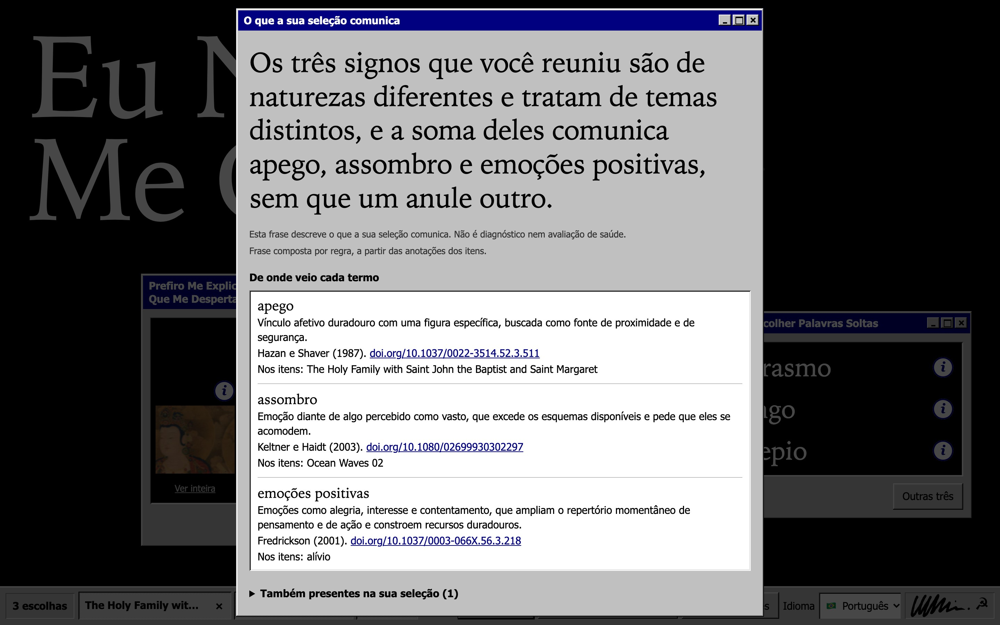
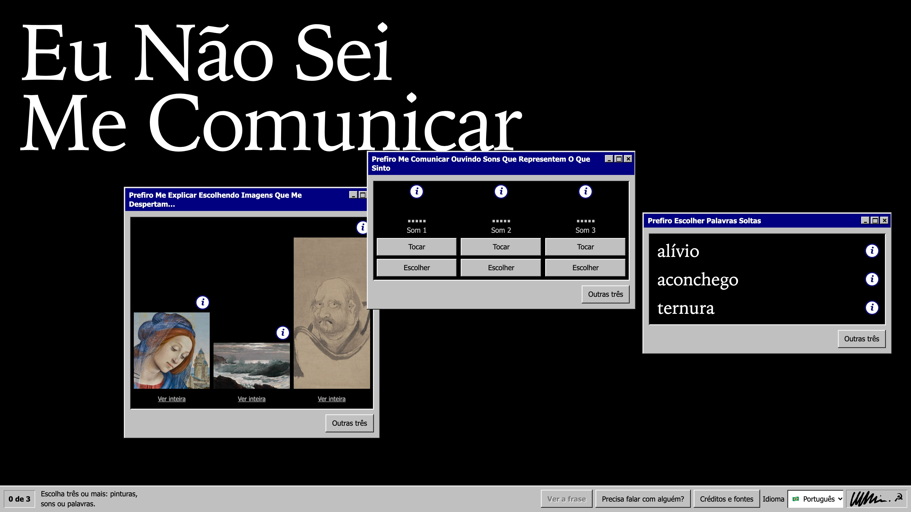
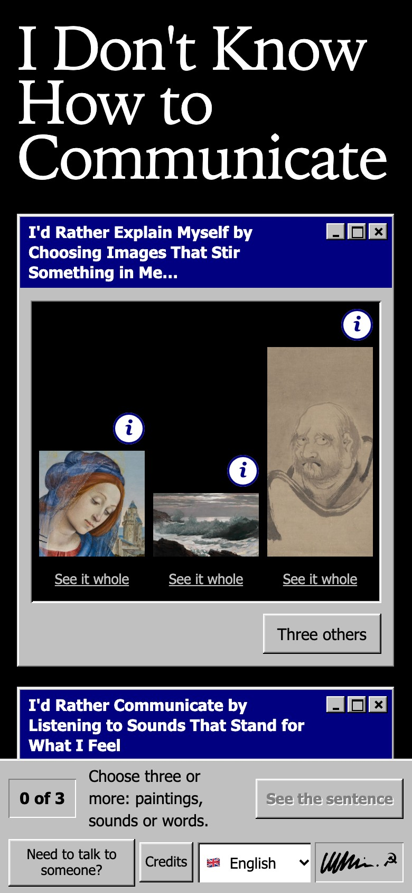
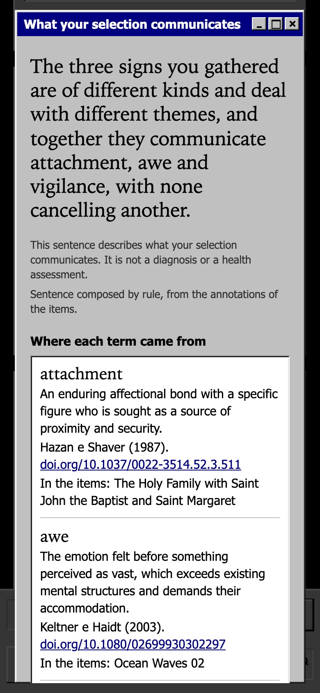
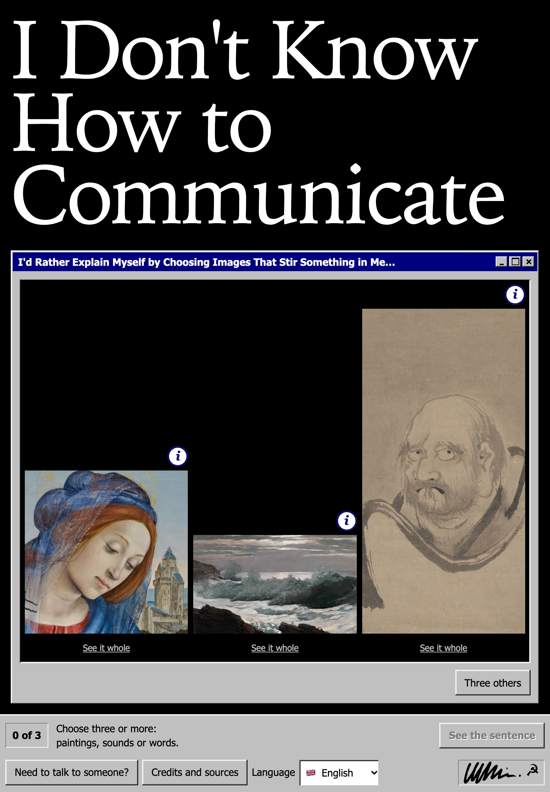
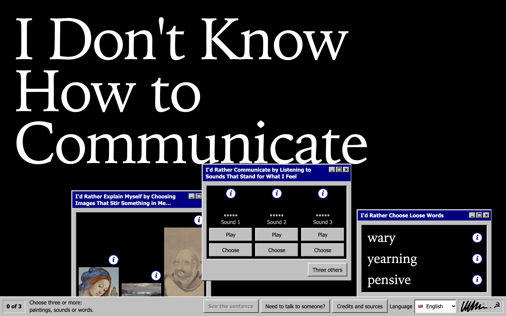
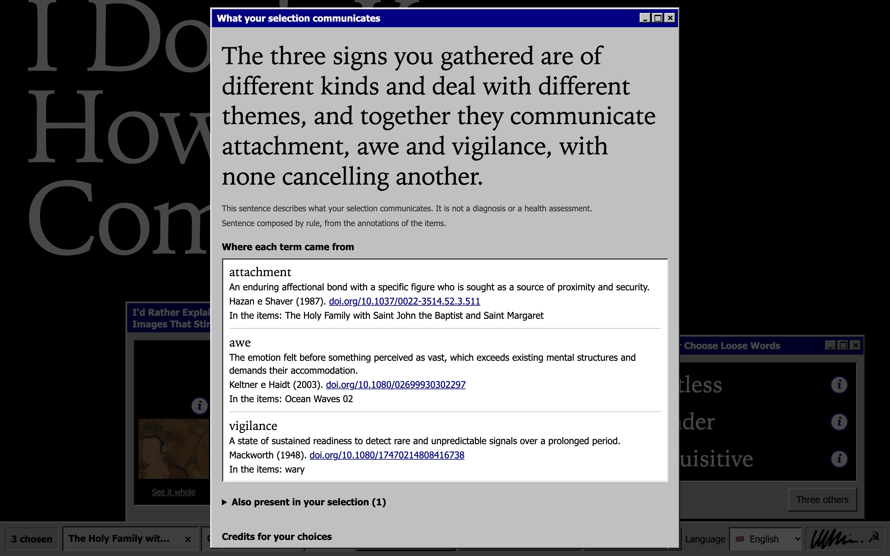
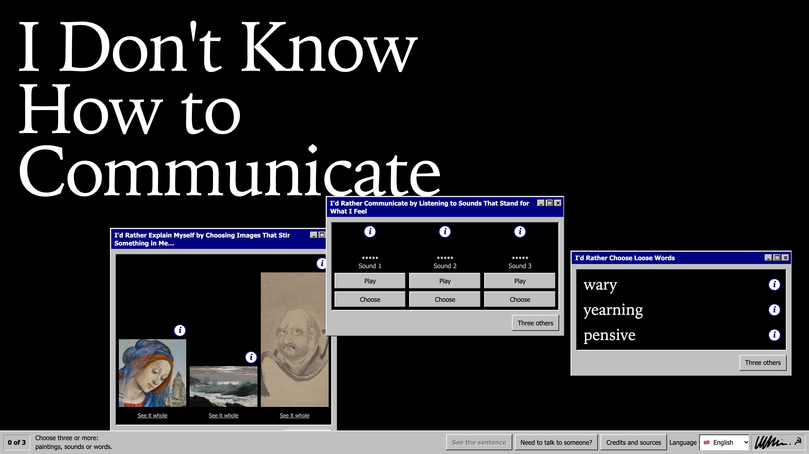
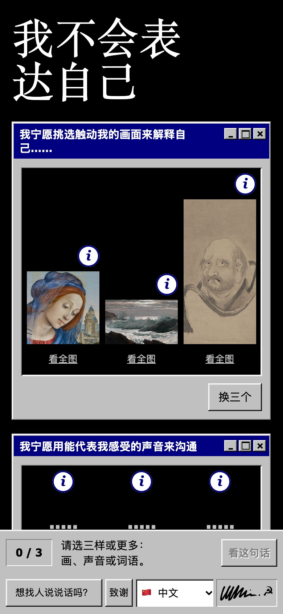
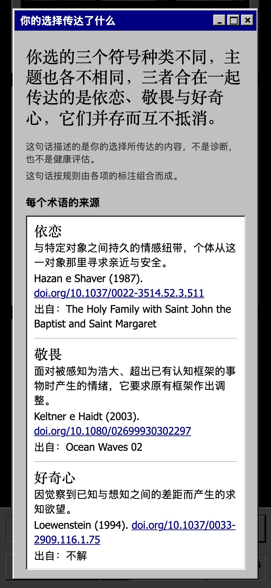
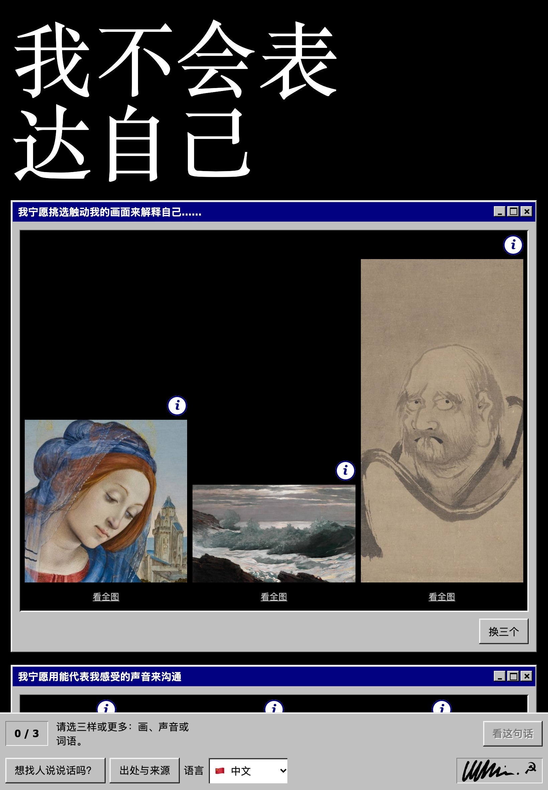
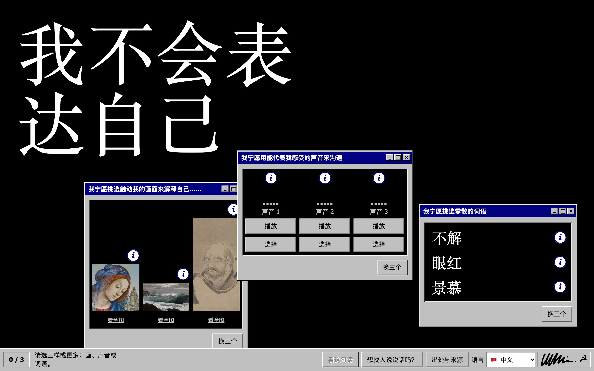
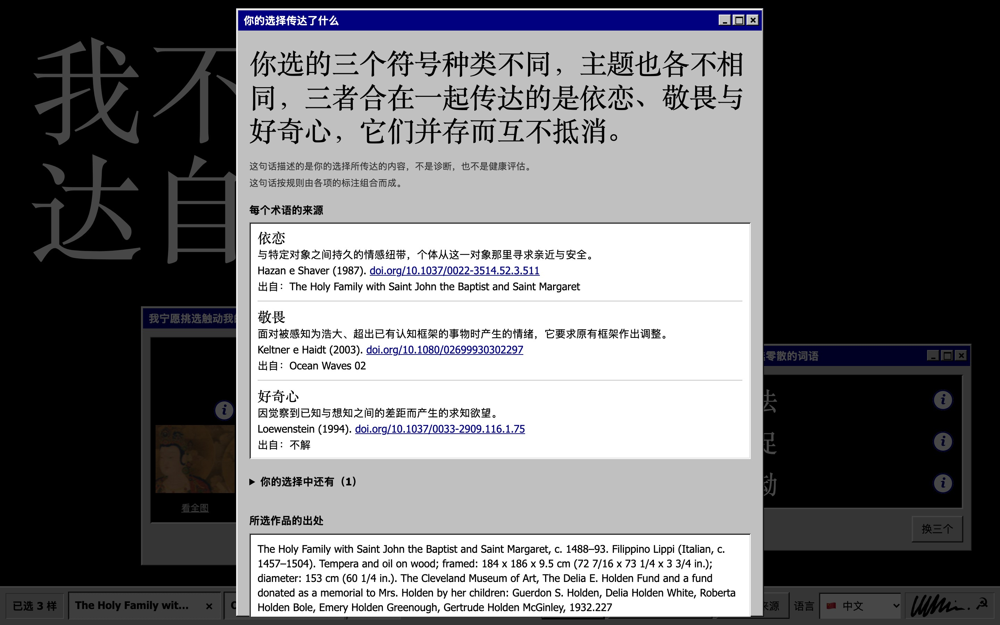
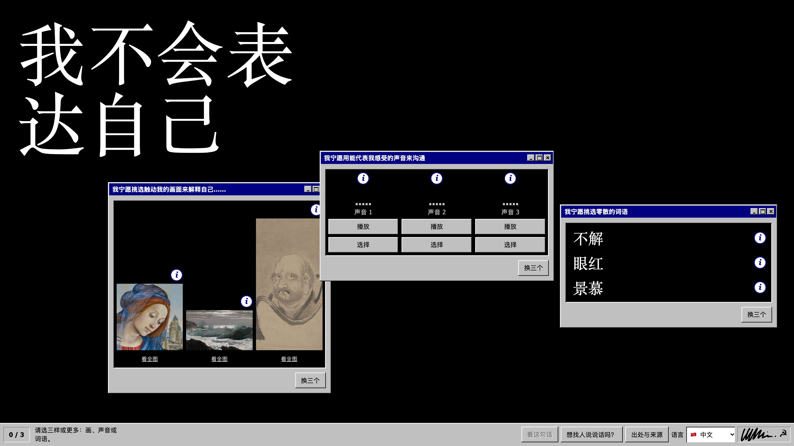